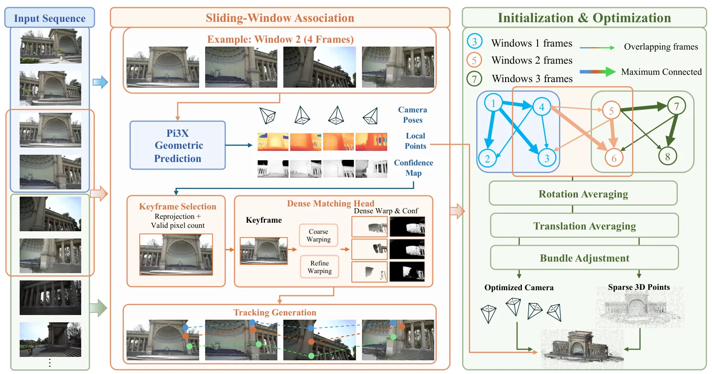
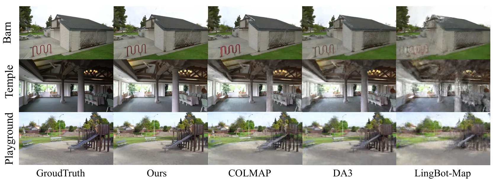
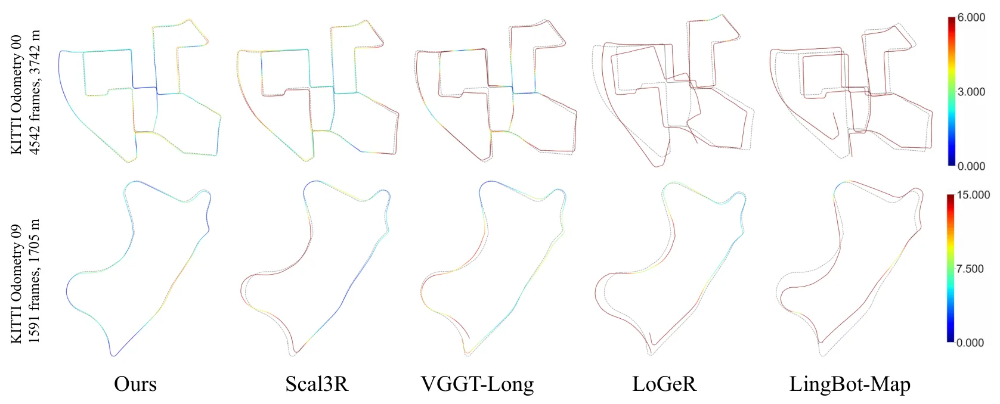
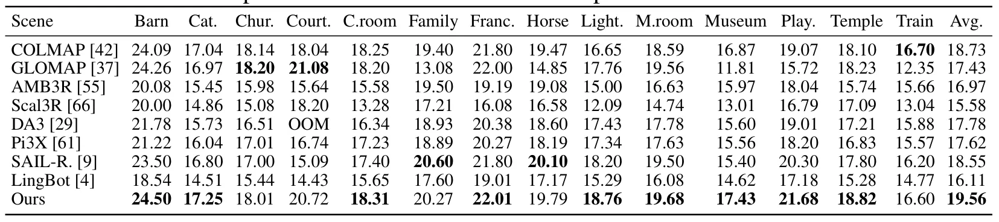
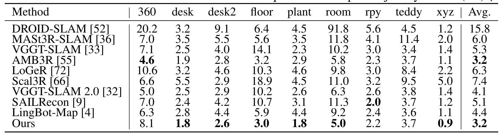
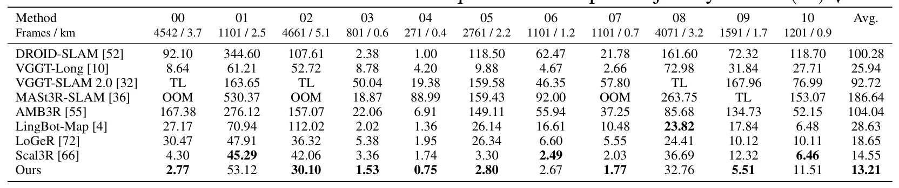

Glob3R：基于三维基础模型的全局运动恢复结构Glob3R: Global Structure-from-Motion with 3D Foundation Models
高度相关于大规模 SfM、长序列漂移、特征轨迹、运动平均和 BA，也展示 foundation model 与经典几何优化的有效结合；后续需看计算/显存成本、极长序列扩展性和代码可复现性。
一句话工作总结
用基础模型提供几何先验和稠密匹配，再以跨窗口特征轨迹、运动平均与 BA 恢复可扩展的全局一致性。
摘要
Glob3R 将三维几何基础模型的前馈预测纳入全局 SfM 优化。方法冻结 Pi3X 主干，增加轻量稠密匹配头来预测参考帧与邻近视图间的 image warps，再将其转换为稀疏而可靠的多视图特征轨迹，为全局优化提供对应约束。关键帧滑窗关联负责跨重叠窗口传播轨迹与相对位姿，最后通过全局运动平均和 bundle adjustment 精化相机位姿、减少尺度不一致并恢复稠密几何。实验覆盖室内、室外、大规模驾驶和无序 SfM，显示其比纯前馈基础模型和近期可扩展重建方法更准确稳健。
Recent 3D geometric foundation models, such as VGGT, provide robust feed-forward 3D reconstruction by directly predicting camera poses and 3D scene points from input images. However, their results remain inaccurate, and scaling them to long sequences or large unordered image sets typically requires chunk-wise processing, which can introduce drift and inconsistency. We present Glob3R, a global SfM-style reconstruction built on 3D foundation models. Our key idea is to explicitly optimize feed-forward geometric predictions. To this end, we augment a frozen Pi3X backbone with a lightweight dense matching head that predicts image warps between selected reference frames and neighboring views. These dense warps are converted into sparse but reliable multi-view feature tracks, which provide correspondence constraints for global optimization. We further introduce a keyframe-based sliding-window association strategy that propagates tracks and relative poses across overlapping windows, enabling scalable reconstruction. Finally, we perform global motion averaging and bundle adjustment to refine camera poses, reduce scale inconsistencies, and recover dense scene geometry. Extensive experiments on indoor, outdoor, large-scale driving, and unordered SfM benchmarks demonstrate that Glob3R achieves robust and accurate reconstruction. It consistently improves over feed-forward foundation-model baselines and recent scalable reconstruction methods, while being more robust than classical SfM pipelines. The refined poses also lead to higher-quality neural rendering, validating the benefit of combining foundation-model priors with global geometric optimization. Project page: https://junyuandeng.github.io/Glob3r
中文解读摘录
- 作者：Junyuan Deng, Heng Li, Kejie Qiu, Lingteng Qiu, Rui Peng, Weichao Shen, Weihao Yuan, Siyu Zhu
- 价值判断：不是简单拼接 foundation-model 输出，而是把稠密 warp 转成可靠多视图 tracks，再用关键帧滑窗关联、全局 motion averaging 和 bundle adjustment 消除长序列漂移与尺度不一致。
- 覆盖场景：室内、室外、大规模驾驶和无序图像集；结果还显示精化位姿能提升 neural rendering。
- 后续核查：项目代码、Pi3X 推理成本、超长序列内存/时间复杂度，以及相对 COLMAP/VGGT 系方法的失败案例。
- 链接：arXiv · 项目页
图表/页面预览
{kind=link}

{kind=link}

{kind=link}

{kind=link}

{kind=link}

{kind=link}
